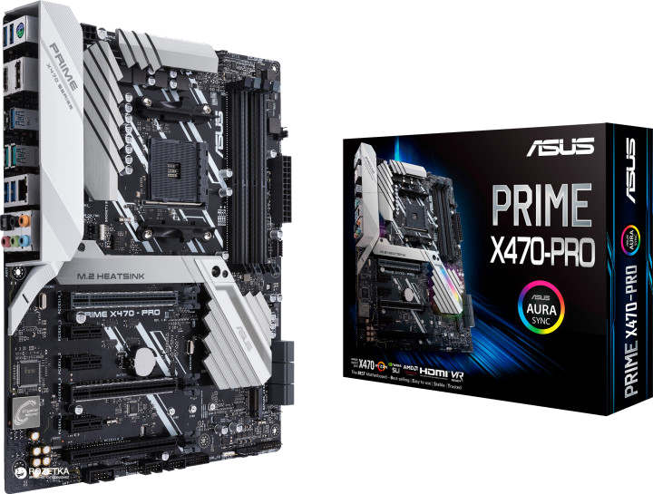

Быстраня навигация по товару:
Asus Prime X470-Pro

Описание:
Материнская плата Asus Prime X470-Pro формата ATX, предназначенная для геймеров. Оптимизация системных
параметров в один щелчок. Ориентирована на покупателей из числа оверклокеров.
Настройка компьютера одним щелчком мыши
Найти оптимальные настройки компьютера стало предельно просто – достаточно воспользоваться функцией
5-сторонней оптимизации от ASUS. С ее помощью можно легко получить максимальную производительность
процессора или максимальную экономию электроэнергии, задать стабильные настройки цифровой системы
питания, отрегулировать скорость работы вентиляторов и даже сконфигурировать сетевой контроллер и
аудиосистему. Иными словами, с помощью этой функции вы легко можете оптимизировать свой компьютер под
конкретные приложения, которые вы используете.
Технические характеристика товара:
-
Материнская плата:
Asus Prime X470-Pro (sAM4, AMD X470, PCI-Ex16)
-
Тип разъема:
Socket AM4
-
Чипсет (Северный мост):
AMD X470
-
Формфактор:
ATX
-
Поддержка памяти:
4 x DDR4 DIMM, Количество каналов 2
-
Слоты:
1 x PCI-E 2.x x16, 2 x PCI-E 3.0 x16, 3 x PCI-E 2.x x1
-
Встроенное видео:
Нет
-
Количество разъемов M.2 (NGFF):
1
-
Поддержка процессоров:
AMD Ryzen 1st/2nd Generation / Ryzen with Radeon Vega Graphics /
7th Generation A-series / Athlon X4
-
Контроллер RAID:
0, 1, 10
-
Максимальный объем оперативной памяти:
64 ГБ (2133 / 2400 / 2666 / 2800 (О.С.) / 2933 (О.С.) /
3000 (О.С.) / 3200 (О.С.) МГц) при установке процессора AMD Ryzen 1st/2nd Generation /
AMD Ryzen with Radeon Vega Graphics 4 ГБ (2133 / 2400 МГц) при установке процессора AMD 7th Generation
A-Series/Athlon X4
-
Коннектор питания:
1 x 24-pin EATX, 1 x 8-pin ATX 12 В
-
Встроенное аудио:
8-канальный HDA кодек Realtek S1220A
-
Количество разъемов SATA II:
Нет
-
Количество разъемов SATA III:
6
-
Внешние разъемы:
1 x PS/2 комбинированный порт для клавиатуры/мыши,
2 x USB 3.1 Type-A (10 Гбит/с), 5 x USB 3.1 Type-A (5 Гбит/с), 1 x USB 3.1 Type-C (5 Гбит/с),
1 x DisplayPort, 1 x HDMI, 1 x LAN (RJ-45), 1 x оптический S/PDIF выход, 5 х аудио разъемов.
Видеовыходы будут работать только в том случае, если процессор имеет встроенное графическое ядро.
-
Физические размеры:
30.5 х 24.4 см
-
Гарантия:
36 месяцев
Подробное описание товара
-
Интерфейс UEFI BIOS
В отличие от традиционных BIOS-систем ASUS UEFI BIOS обладает графическим интерфейсом с поддержкой
мыши. Он имеет режимы для новичков и энтузиастов.
-
Стабильная работа
Комплекс решений 5X Protection обеспечивает непревзойденную надежность материнских плат ASUS,
а строгие стандарты тестирования гарантируют их совместимость с огромным количеством компьютерных
компонентов.
-
Чипсет AMD X470
Чипсет AMD X470 предлагает два порта USB 3.1 (10 Гбит/с) и шесть портов SATA 6 Гбит/с для
подключения периферийных устройств, а также обеспечивает широкие возможности по разгону процессоров AMD
для разъема AM4. Он оптимизирован под использование многопроцессорных графических конфигураций,
собранных по технологиям NVIDIA SLI или AMD CrossFireX.

Также рекомендуем к данному товару